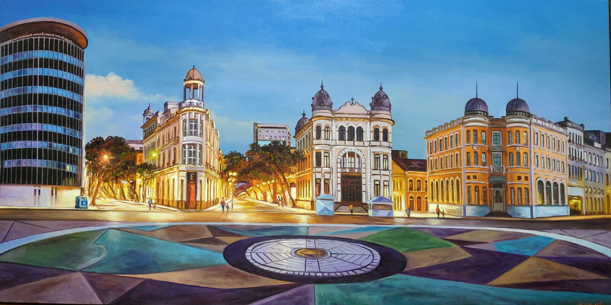

CONHEÇA O MARCO ZERO EM RECIFE

O Marco Zero no Recife Antigo é o lugar de referência onde a cidade nasceu e todas as medidas oficiais de distâncias rodoviárias usam como ponto de partida. Seu nome é, na verdade, Praça Rio Branco e fica ao lado do Porto de Pernambuco. Pode-se dizer que ele se situa no centro histórico da cidade, que é mais conhecido como Recife Antigo por ser a parte onde se iniciou o povoamento da capital pernambucana. A popularização do nome Marco Zero aconteceu desde 1938, devido à instalação do símbolo geográfico na parte central da praça. Ele foi uma doação do Automóvel Clube de Pernambuco. Além disso, há nela uma estátua de bronze de 2,80 metros, de autoria do escultor francês Félix Charpentier.

A Praça do Marco Zero, também conhecida como Praça do Rio Branco, localizada no coração desse bairro, é onde podem ser vistos alguns reflexos de todos esses momentos, de modo que no entorno estão localizados monumentos históricos importantes. Após ter permanecido submerso até meados do século 18, por ser a rota de entrada pelo mar, o Marco Zero de Recife foi oficialmente inaugurado em 31 de janeiro de 1938. Nos anos 1990, o entorno também passou por reformas que buscaram revitalizar a área portuária, o que implicou a retirada de parte da cobertura vegetal que ali existia. Com isso, os antigos casarões deram lugar a novos estabelecimentos e avenidas.

A mudança do piso também ocorreu, e hoje o Marco Zero está localizado no interior de uma rosa dos ventos gigante, com 10 metros de raio, obra de Cícero Dias, transformando o local em um símbolo do ponto inicial das estradas do Estado de Pernambuco e conferindo um novo valor à região. Ao redor estão dispostos edifícios de grande valor histórico, como a Bolsa de Valores e a Associação Comercial do Recife, o que valoriza o bairro e a torna a praça especialmente convidativa para turistas e moradores. Com o tempo, o Marco Zero de Recife não ficou consagrado apenas como um cartão de visita, mas também como um ponto de encontro da população, que tem ali a realização de diversos espetáculos, como o Ano-Novo, garantindo aos visitantes um show de luzes e apresentações, indo além da função simbólica.